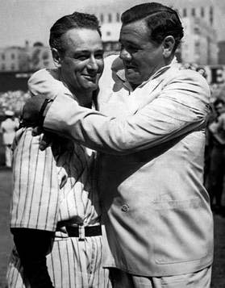
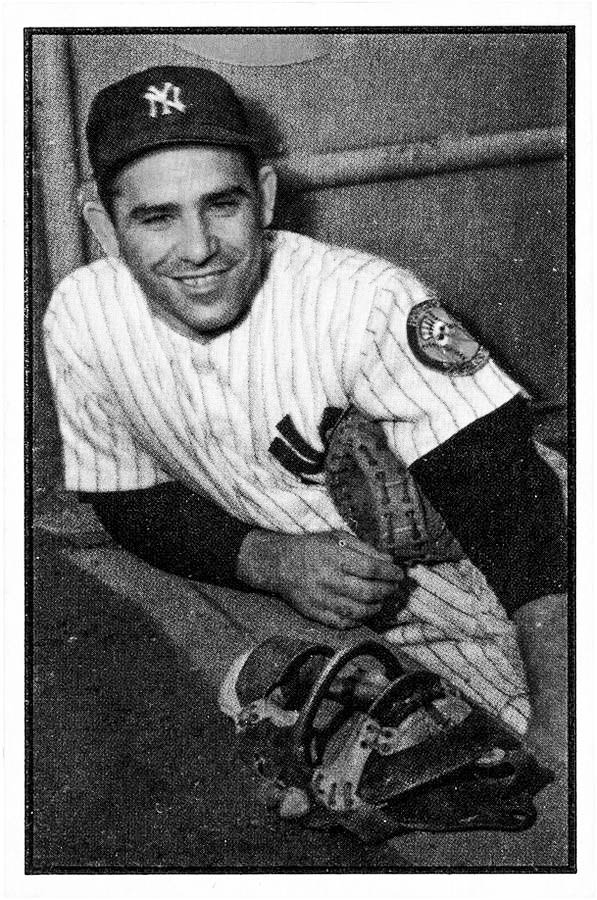

1936-1947A Transition

1936: Joltin' Joe
New York's 1936 season was Joe DiMaggio's first with the club. The young center fielder was signed in 1934 from the Pacific Coast League's San Francisco Seals, and made his debut with the Yankees in 1936, gaining an extra year's experience with the Seals. DiMaggio had a .323 batting average, 29 home runs, and 125 RBI in his rookie season. Gehrig won the AL MVP Award for his season, in which he hit a career-high 49 home runs, with a .354 batting average and 152 RBI. Behind these performances, the Yankees had a 102-win season and won the AL pennant, before defeating the Giants in the 1936 World Series, four games to two.[109] After a second consecutive 102-win regular season and AL championship in the 1937 season, the Yankees again defeated the Giants in the Series—this time winning 4–1.[110] The 1938 Yankees had 48 victories in 61 games during one stretch, and won the team's third straight AL championship despite a drop in batting performance by Gehrig. In the 1938 World Series, the Yankees swept the Chicago Cubs in four games. Ruppert died early in 1939; before his death, he sold his ownership interest to Barrow, who took over as the Yankees' president. Financially, the club's position had improved from earlier in the decade; after posting a net loss of around $170,000 from 1931 to 1935, the team made over $1 million during the next four years.
1939: The End of an Era
The 1939 Yankees lost the services of Gehrig early in the season. After starting the year poorly, he was replaced by Babe Dahlgren, ending his streak of 2,130 consecutive games played; he was later diagnosed with amyotrophic lateral sclerosis, which forced him to retire. Despite the loss of Gehrig, New York fielded a team that posted 106 victories in 1939, 17 more than the second-place team. DiMaggio was named MVP of the league; he led the AL in batting average (.381) and was second in RBI (126). Ruffing led the Yankees' pitchers with 20 wins. In the 1939 World Series, the Yankees swept the Cincinnati Reds in four games for the club's fourth consecutive Series championship. Writers have given the 1936–39 Yankees acclaim for their success in regular season and World Series play; Stout wrote that the 1939 squad was "magnificent", and that their campaign was "wholly without drama" besides Gehrig's departure from the lineup. In response to the Yankees' dominance, after the 1939 season the AL temporarily barred most transactions between the last pennant winner and other league teams in an attempt to prevent New York from improving its roster. The Yankees' run of championships ended in 1940; the team had 18 more losses than in the previous season and finished second, two games behind the Tigers.
July 4, 1939: Lou Gehrig Appreciation Day
Doctors released Gehrig's ALS diagnosis to the public on June 19, 1939. Two days later, the New York Yankees announced Gehrig's retirement, with an immediate public push to honor Gehrig. Lou Gehrig Appreciation Day was swiftly planned for July 4, 1939. New York Mayor Fiorello La Guardia called Gehrig "the greatest prototype of good sportsmanship and citizenship" and Postmaster General James Farley concluded his speech by predicting, "For generations to come, boys who play baseball will point with pride to your record."
Yankees Manager Joe McCarthy struggled to control his emotions. Turning tearfully to Gehrig, the manager said, "Lou, what else can I say except that it was a sad day in the life of everybody who knew you when you came into my hotel room that day in Detroit and told me you were quitting as a ballplayer because you felt yourself a hindrance to the team. My God, man, you were never that."
The Yankees retired Gehrig's uniform number "4", making him the first player in Major League Baseball history to be accorded that honor. Gehrig received so many various gifts, from VIPs and groundskeepers alike, that he began setting them down on the ground, because he no longer had the arm strength to hold them. The Yankees gave him a silver trophy with all of their signatures engraved on it.
On July 4, 1939, Gehrig delivered what has been called "baseball's Gettysburg Address" to a sold-out crowd at Yankee Stadium. The following text is the official written version published on LouGehrig.com:
"Fans, for the past two weeks, you've been reading about a bad break. [pause] Today I consider myself the luckiest man on the face of the earth. I have been in ballparks for 17 years and have never received anything but kindness and encouragement from you fans.
"When you look around, wouldn't you consider it a privilege to associate yourself with such fine-looking men as are standing in uniform in this ballpark today? Sure, I'm lucky. Who wouldn't consider it an honor to have known Jacob Ruppert? Also, the builder of baseball's greatest empire, Ed Barrow? To have spent six years with that wonderful little fellow, Miller Huggins? Then to have spent the next nine years with that outstanding leader, that smart student of psychology, the best manager in baseball today, Joe McCarthy? Sure, I'm lucky.
"When the New York Giants, a team you would give your right arm to beat, and vice versa, sends you a gift – that's something. When everybody down to the groundskeepers and those boys in white coats remember you with trophies – that's something. When you have a wonderful mother-in-law who takes sides with you in squabbles with her own daughter – that's something. When you have a father and a mother who work all their lives so you can have an education and build your body – it's a blessing. When you have a wife who has been a tower of strength and shown more courage than you dreamed existed – that's the finest I know.
"So I close in saying that I might have been given a bad break, but I've got an awful lot to live for. – Thank you."
1941: Joe's Hit Streak
DiMaggio recorded base hits in 56 consecutive games for the Yankees during the 1941 season, breaking the MLB record of 44 games that had been set by Willie Keeler in 1897. His hitting streak lasted from May 15 to July 17, when DiMaggio failed to record a hit during a game against the Indians at Cleveland Stadium. After winning the AL pennant, the Yankees met the Brooklyn Dodgers in the 1941 World Series, prevailing in five games. In Game 4, the Yankees trailed 4–3 in the ninth inning and were on the verge of defeat when Tommy Henrich struck out; Dodgers catcher Mickey Owen was unable to field the pitch, allowing Henrich to reach base. That began a four-run game-winning rally, and New York won the championship in Game 5 the following day.
1942: The End of the McCarthy Era
The attack on Pearl Harbor occurred during the offseason, and some baseball players immediately joined the Armed Forces. Most of the Yankees' roster remained with the team in 1942, and the club repeated as AL champions despite Gomez's departure. In the 1942 World Series, the Cardinals gave the Yankees their first Series loss since 1926, after winning in eight consecutive appearances.DiMaggio and other Yankees entered the military before the 1943 season, but the club won the AL championship for the 14th time and 7th since 1936. The Cardinals met the Yankees in a World Series rematch, and New York won four games to one.
After 1943, more of the team's players were drafted into military, and the Yankees ended 1944 in third place, one position higher than they finished the following season.A group consisting of Larry MacPhail, Dan Topping, and Del Webb bought the Yankees, their stadium, and the franchise's minor league teams for $2,800,000 in 1945. Under the new ownership, Yankee Stadium underwent extensive renovations that included the installation of lights. With the war over and the return of players from overseas, the Yankees set an MLB single-season home attendance record by attracting 2,265,512 fans in 1946. McCarthy resigned as manager early in the season. The Yankees used two other managers during the year (Bill Dickey and Johnny Neun), and ended 1946 in third place. Catcher Yogi Berra made his Yankees debut that year; in his 18-season career, Berra won the AL MVP Award three times. Bucky Harris was brought in to be the manager, and his 1947 team won the AL pennant and defeated the Dodgers in a seven-game World Series. After the end of the Series, MacPhail sold his share of Yankees ownership to Topping and Webb for $2 million.